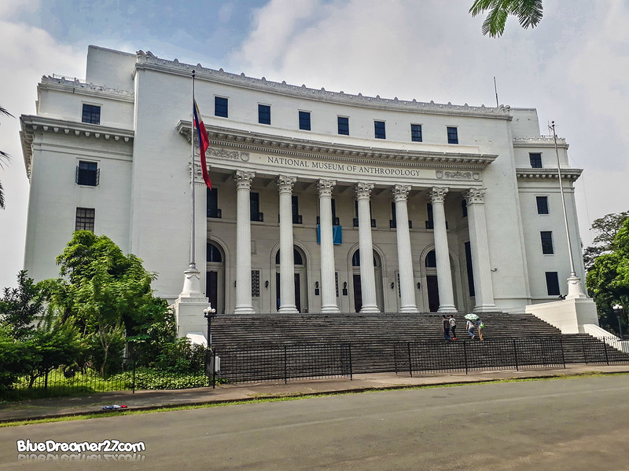

The National Museum of Anthropology stages the Philippine ethnographic and terrestrial and underwater archaeological collections narrating the story of the Philippines from the past, as presented through artifacts as evidences of its pre-history.
The National Museum of Anthropology is a branch of the National Museum of the Philippines located in Manila. It is dedicated to the study and preservation of the Philippines' diverse cultural heritage. Here are some of the things that make the National Museum of Anthropology special:
Collection: The museum has an extensive collection of anthropological artifacts from different parts of the Philippines. The collection includes ethnographic materials, archaeological artifacts, and indigenous art.
Exhibits: The museum has a range of exhibits that showcase the cultural diversity of the Philippines. These exhibits provide visitors with insights into the country's rich history and culture, including pre-colonial and colonial periods.
Educational Programs: The museum offers educational programs that cater to students and the general public. These programs include guided tours, lectures, workshops, and cultural performances.
Location: The museum is located within the Rizal Park Complex, a prime location in Manila that is easily accessible from other major tourist destinations.
Cultural Significance: The museum is a significant institution in the preservation and promotion of the Philippines' cultural heritage. It plays an important role in raising awareness about the importance of cultural preservation and promoting cultural diversity.
Overall, the National Museum of Anthropology is a must-visit destination for anyone interested in learning about the rich cultural heritage of the Philippines. Its extensive collection, educational programs, and cultural significance make it a valuable resource for both locals and tourists.